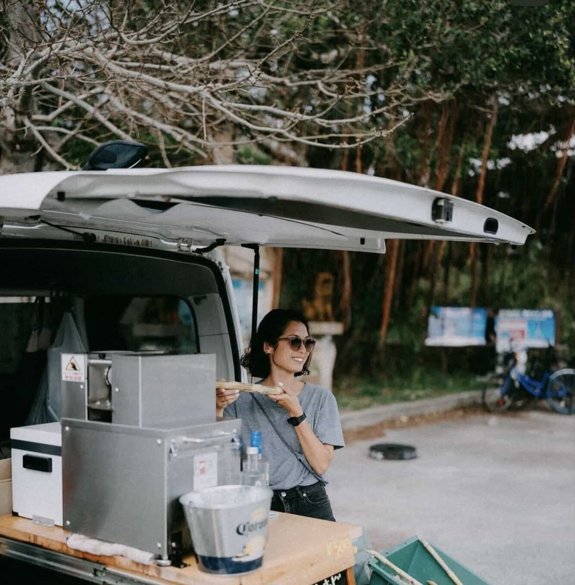
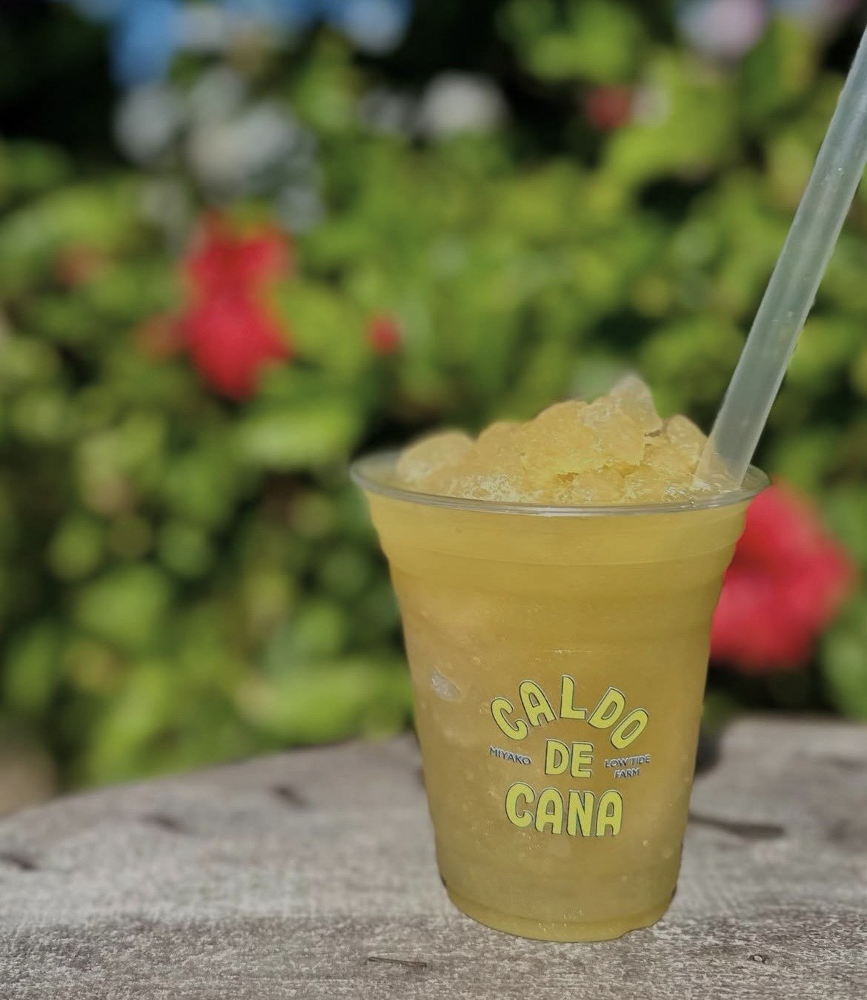

Caldo de Canaカルド・デ・カナ
Sugarcane juice and bright island refreshment by Low Tide Farm in Miyakojima.
Low Tide Farmが手がける、宮古島らしいさとうきびドリンクのキッチンカー。
Caldo de Cana is a cheerful Miyakojima drink stand serving sugarcane refreshment with a sunny, tropical feel. It is simple in the best way: cold, bright, easy to enjoy, and very fitting for a day spent driving toward the sea.
Caldo de Canaは、宮古島らしい明るさを感じるさとうきびドリンクのスタンドです。冷たくて、爽やかで、海へ向かう途中にふっと立ち寄りたくなるような一杯を楽しめます。
The stand is connected to Low Tide Farm and has the feeling of a small island project made with care. For travelers, it is an easy little stop that adds color to the day without needing a long plan.
Low Tide Farmから生まれた、島の空気に合う小さなプロジェクト。旅行中の方にとっても、予定を大きく変えずに楽しめる、宮古島らしい寄り道です。
Why My Miyakojima Recommends ItMy Miyakojimaがおすすめする理由
My Miyakojima recommends Caldo de Cana because it captures something sweet and honest about Miyakojima: sunshine, sugarcane, local creativity, and the joy of finding a small island stop that feels personal.
My MiyakojimaがCaldo de Canaをおすすめする理由は、宮古島らしい太陽、さとうきび、ローカルの感性、そして小さな出会いの楽しさが一杯の中に感じられるからです。
Photos 写真



Good to Know 利用情報
Caldo de Cana is a mobile-style drink stand, so opening days and exact locations may change. Public listings mention the Karimata and Ikema Bridge area on weekdays, with weekend updates shared through Instagram stories.
Caldo de Canaはキッチンカー型のドリンクスタンドのため、営業日や出店場所が変わる場合があります。公開情報では平日は狩俣・池間大橋方面での出店が案内され、週末の予定はInstagramのストーリーズで発信されています。
Contact and Latest Updates お問い合わせ・最新情報
Latest Schedule
Please check Instagram stories for current opening days and weekend locations.
最新の出店情報
営業日や週末の出店場所は、Instagramのストーリーズで最新情報をご確認ください。
Follow @lowtide_farm for the latest Caldo de Cana opening updates. Caldo de Canaの最新出店情報は @lowtide_farm をご確認ください。
For Miyakojima Businesses宮古島の事業者さまへ
Share your story in a way visitors can feel.
お店やサービスの魅力を、英語と日本語で丁寧に届ける紹介ページを制作しています。
My Miyakojima creates curated bilingual feature pages for selected local businesses, helping visitors understand your story before they contact you.
Contact My Miyakojima掲載について相談する